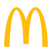

噢麦嘎没有 Token 也能先玩：点下方八型图鉴里任意一张，看完整算法跑一遍。想测自己，就连上你的订单。
真实订单通过麦当劳 MCP order-list 只读获取。Token 只在你电脑上的桥接进程里，网页拿不到。
# macOS / Linux
export MCD_MCP_TOKEN="你的 Token"
python3 mcp_bridge.py
# Windows PowerShell
$env:MCD_MCP_TOKEN="你的 Token"
python mcp_bridge.py今年的你，正式确诊为
—
数据窗口：以 order-list 实际返回为准。
每种人格按订单行为独立打分（0–100），最高分当选。差几分就是另一个你。
三种场合，三种说法。复制就能发。
每一型都对应一组真实的订单行为。点开任意一张，用该人格的演示订单跑一遍完整算法，海报会标注「演示样本」。
不是又一个“凑券省钱”工具。它只读你的订单，把一张流水账变成一个能自我介绍的身份。
本机桥接调用麦当劳 MCP 的 order-list 和 now-time-info。不下单、不支付、不领券。
只留下单时间、渠道、金额、商品名。订单号、门店、地址、手机号在桥接里就被丢掉。
20+ 项指标、八型打分全部在你的浏览器里完成，不上传任何服务器，包括 GitHub。
把你的真实数字画进人格海报，一键保存 PNG，配好三种渠道的分享文案。
这一年，辛苦你和你的胃了。把海报发给你最常一起吃麦的那个人。